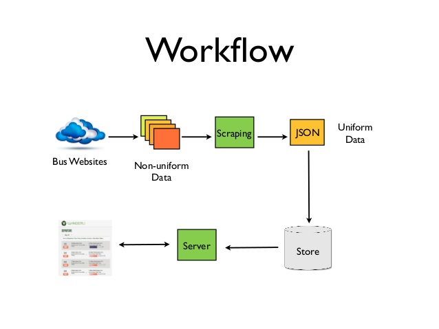
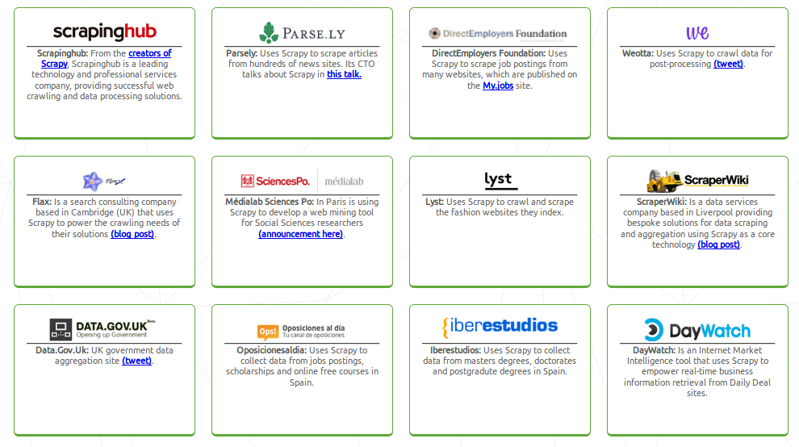

Web Scraping Basics
Contributors
Snehil Verma @vsnehil92
Use of Scraping
- Real Estate Listings gathering.
- Product review scrapes.
- Scraping to create other websites.
- Getting massive amounts of data for research purposes.
Scraping and Python
- Requests.
- Beautiful Soup 4.
- lxml.
- Selenium.
- Scrapy.
Workflow of web scraping

Installing Beautiful Soup
- pip install beautifulsoup4
Writing basic script in Beautiful Soup
Scrapy
$ pip install Scrapy
Terminal commands of Scrapy
- startproject.
- genspider.
- settings.
- runspider.
- shell.
- fetch.
- view.
- version.
Writing basic scrapy spider
List of comanies that usses scraping
